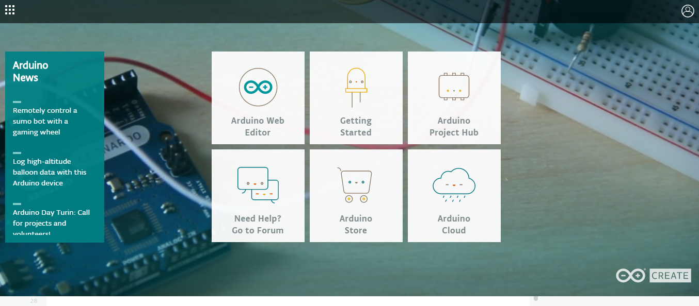
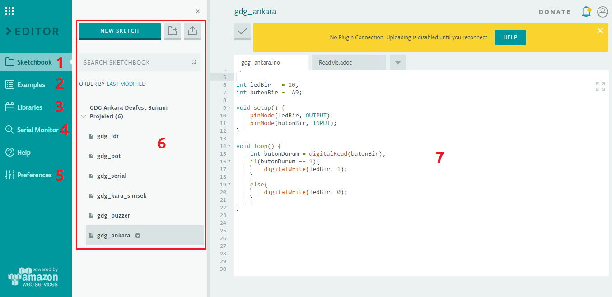
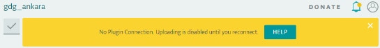

ana sayfa | github adresi | ham sayfa
2. Arduino¶
Arduino geliştirdiğiniz yazılımlar ile elektriği kontrol edebilmenizi sağlayan aracı kartlardan biridir. Ancak Arduino sadece bir kart olmanın ötesinde, insanları bir şeyler üretmeye, kendi sorunlarını çözmeye yönlendirmiş ve son kullanıcının dahi kullanabileceği düzeyde ilerlemiştir. Bundan dolayı ona sadece geliştirme kartı demek saygısızlık olur diye düşünüyorum.
Klasik Tarzda Tanım
Arduino, Kolombiyalı sanatçı ve programcı Hernando Barragan’ın Ivrea Tasarım enstütüsündeki tez çalışması olarak doğmuştur. Arduino ismi Ivrea kasabasının tarihi karakterlerinden Ivrealı Arduin’den gelmektedir. Ayrıca “Arduino” italyancada güçlü arkadaş anlamına gelmektedir.
2.1. Neden Arduino?¶
2.1.1. Uygun Fiyat¶
Arduino’nun hedef kitlesi öğrenciler ve elektroniğe meraklı hobiciler olduğu için fiyatı da buna uygun. Ayrıca alternatif Arduino modellerini tercih ederek maliyeti minimuma indirebilirsiniz. Bu modellere Klon Arduino başlığı altında değineceğiz.
2.1.2. Kolay Programlama Dili ve Ortamı¶
Arduino’yu programlamak için kullandığımız Arduino - Processing dili ve programlarımızı derleyip yüklememizi sağlayan Arduino IDE’yi öğrenmesi ve kullanması çok kolaydır.
2.1.3. Çaprak (Cross) Platform¶
Arduino IDE yazılımı Windows, Linux ve macOs işletim sistemlerinde çalışabilir. Dolayısıyla platform bağımlılığı olmadan Arduino’yu programlayabilirsiniz.
2.1.4. Geniş Topluluk¶
Arduino’nun topluluğu diğer geliştirme kartlarınınkine göre çok daha geniştir. Ülkemizde de oldukça geniş kullanım alanı olan Arduino hakkında Türkçe dökümanlara kolaylıkla ulaşabilir ve sorunlarınıza yanıtlar bulabilirsiniz.
3. Arduino IDE¶
Arduino IDE’yi öncelikle https://www.arduino.cc/en/Main/Software adresinden indirip kuralım. Kurulum aşamaları normal bir program kurulumundan farksız olduğu için bu kısmı açıklamadan atlıyoruz.
Arduino IDE’yi açtığınız zaman sizi ilk olarak aşağıdaki ekran karşılayacaktır.
Uyarı
Eğer Arduino IDE İngilizce ise File>Preferences>Editor language kısmından dili Türkçe yapabilirsiniz!
- Pencere Başlığı (Windows’un pencere yapısı ile alakalı. Bazı linux masaüstü ortamları ve macOs cihazlarda farklı yerlerde bulunabilir.)
- Arduino IDE Menüsü
- İşlevsel Kısayol Butonları
- Seri Ekran Butonu
- Arduino Taslakları (Sekme mantığıyla birden fazla açabilirsiniz.)
- Arduino Programımızı Yazdığımız Bölüm
- Sonuçları (hata ve uyarıları da) görebildiğimiz alan.
- Çalıştığımız Arduino modeli ve bağlı olduğu usb port adresi.
3.1. İşlevsel Kısayol Butonları¶
Bu butonları açıklamak gerekir ise soldan sağa,
| Kontrol Et: | Hazırladığınız uygulamayı derlemeden ve Arduino’ya yüklemeden kontrol etmenizi ve hataları tespit etmenizi sağlar. |
|---|---|
| Yükle: | Arduino programınızı derleyip Arduino kartınıza yükler. |
| Yeni: | Yeni pencerede, boş bir Arduino taslağı açar. |
| Aç: | Kayıtlı Arduino taslağını açmak için kullanılır. |
| Kaydet: | Arduino taslağını kayıt etmek için kullanılır. |
4. Arduino Create¶
Arduino Create, Arduino ekibi tarafından hazırlanan ve sunulan, Arduino ile proje geliştiren kullanıcıların arasındaki iletişimi ve yardımlaşmayı arttırmayı hedefleyen online bir hizmettir.
İçinde Arduino IDE benzeri program yazıp yüklememizi sağlayan araçlardan, yeni projeler keşfetmemizi sağlayacak sosyal paylaşım ortamına kadar birçok şey bulunuyor. Ayrıca Create üzerinde programlarınızı kayıtlı tutabileceğiniz için Cross Platform (Çapraz Platform) başlığında bahsettiğimiz platform bağımsızlığı busefer cihaz bağımsızlığına dönüşüyor. Her cihazdan ufak bir eklenti kurmak şartı ile programlarınıza ulaşabiliyor, geliştirmeye devam edebiliyor ve kayıt edebiliyorsunuz.
https://create.arduino.cc/ adresinden giriş yaptıktan sonra bizi bu ekran, yani Arduino Create’nin ana ekranı karşılıyor. Bu ekrandaki kutucukları açıklamak istiyorum çünkü birçoğunu bundan sonra sıkça kullanacaksınız.
| Arduino Web Editor: | |
|---|---|
| Arduino programları hazırlayabileceğiniz, bulut ortamında kayıt edip daha sonra başka cihazlardan erişebileceğiniz ve en iyisi programlarınızı direk tarayıcı üzerinden Arduino kartınıza (bir eklenti kurarak) yükleyebileceğiniz online Arduino IDE ortamı. | |
| Getting Started: | |
| Arduino Web Editörü kullanmak için gereken eklentinin kurulumu gibi, bir kere yapmanızın yeteceği konularda size yol gösteriyor. Hızlı başlangıç sayfası. | |
| Arduino Project Hub: | |
| Web Editorden sonra en işlevsel özelliklerinden birinin de bu olduğunu söylemeden geçemeyeceğim. Çevirisini Arduino Proje Merkezi olarak yapabiliriz. Adından da anlaşılacağı gibi herkesin projesini paylaşabildiği -ki bu paylaşım detaylıca, kullanılan malzemelerin listesi(var ise arduino.cc marketteki linki), yararlanılan kaynaklar (örn Arduino IDE) ve detaylı yapım aşaması- ve uğraş arayanların proje beğenip yapabildiği bir platform. Göz atmakta fayda var :) | |
| Need Help? Go to Forum: | |
| Çözümünü bulamadığınız konuları bilen birilerine danışmak için kullanabileceğiniz resmi Arduino forumunun kısayol butonu. Ancak kullanılan dilin doğal olarak İngilizce olması umuyorum ki sizin için problem olmaz. | |
| Arduino Store: | Resmi Arduino mağazası. Ancak ürünler yurtdışından geleceği için kargo süresi ve ücreti can sıkabilir. Bizim için pek kullanışlı değil. |
| Arduino Cloud: | Nesnelerin İnterneti (IoT) başlığı altında Arduino’larınızı birbirleri ve bir merkezle -kendisi Arduino Cloud oluyor- haberleştirmek isteyenler için biçilmiş kaftan. |
4.1. Arduino Web Editor¶
Bu resimde Web Editör sayfasını görüyoruz. Detaylara inmeden önce numaralandırdığım bölümleri size açıklamak istiyorum ki kafanızda şablon oluşsun.
- Taslak defteri olarak çevirebiliriz, 6 numaralı alandaki taslaklarımızın bulunduğu sekmeyi açar.
- Örnekler sekmesine geçer, basit-orta ve ileri düzey kod örneklerine ulaşabilirsiniz. (Arduino IDE’dekiler ile aynı.)
- Libraries yani kütüphaneler daha az kod ile daha çok iş yapabilmemiz için önceden hazırlanmış, projemize ekleyip kullanabileceğimiz hazır kod taslakları.
- Seri monitör, Arduino’muz ile seri iletişimdeyken gelen verileri okuyabileceğimiz ve veri gönderebileceğimiz ekran.
- Web Editörün yazı boyutu, rengi gibi ayarlamaları yapabileceğiniz tercihler sekmesi.
- Taslaklarımız, Arduino programlarımız.
- Bu alan 6. kısımdan sonra sağda kalan her tarafı kapsıyor. Açık olan Arduino projemizi düzenleyebileceğimiz alan.
Önemli
Bu sarı renkli uyarı sizinde dikkatinizi çekmiştir, bilgisayarımda eklentinin kurulu olmadığını dolayısıyla programı Arduino Kartına yükleyemeyeceğimi söylüyor. Ana menüdeki Getting Started bölümüne dönüp ya da Help butonuna basıp eklentiyi indirip kurduğum zaman görüntü aşağıdaki gibi oluyor ki normali bu.
Arduino IDE’deki işlevsel kısayol butonlarına değinmiştik. Bu butonlar da aynıları diyebiliriz, biraz daha farklı konumlandırılmış okadar.
- Üstünde çalıştığımız Arduino programımızın başlığı.
- Programımızı yüklemeden denetlemek, hataları tespit etmek için kullandığımız doğrulama butonu.
- Yükleme butonu. Programımızı derleyip -eklenti sayesinde- Arduino kartımıza yüklememizi sağlayan buton.
- Yüklemeyi yapacağımız kartı seçtiğimiz buton. Bilgisayarda bağlı olan kartlar burada listelenir.
- Daha fazla seçenek sunan buton. Örneğin Kaydet, Farklı Kaydet, Taslağı İndir gibi. Kayıt etme işlemi online olarak hesabınıza kayıt olarakgerçekleşiyor.
- Taslağımızı -programımızı- link olarak paylaşmak ve sitemize gömmek için kullanabileceğimiz buton.